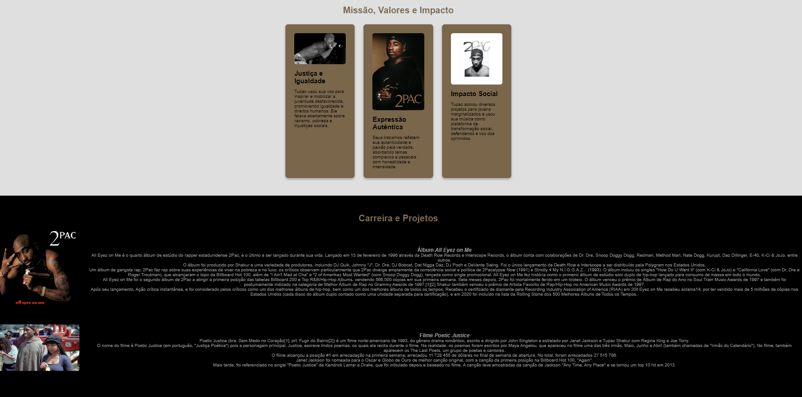

Minha Evolução no Projeto
Minha jornada técnica e criativa tem sido uma experiência incrível, onde aprendi a me expressar através de soluções técnicas e criativas.
Primeiro Projeto
Na primeira semana de tecnologia, meu primeiro projeto envolveu criar uma página estática utilizando HTML e CSS. Era simples, mas serviu como base para aprender os conceitos fundamentais.
Dificuldades Encontradas: O maior desafio foi garantir que os elementos se alinhassem corretamente e o site fosse responsivo.

Projeto Atual
Agora, estou trabalhando com PHP para criar páginas dinâmicas e interativas, o que representa um grande avanço técnico. A criação de uma estrutura de navegação mais complexa foi um desafio empolgante.
Dificuldades Encontradas: Lidar com PHP para tornar a navegação dinâmica e garantir que as interações funcionassem de maneira fluída foi um grande obstáculo.

Comparação entre o Primeiro Projeto e o Atual
Progresso Técnico: Antes, apenas sabia como estilizar páginas estáticas. Agora, estou criando páginas dinâmicas e interativas com PHP.
Progresso Criativo: O design evoluiu para um layout mais sofisticado, utilizando uma paleta de cores vintage e uma navegação mais fluida.